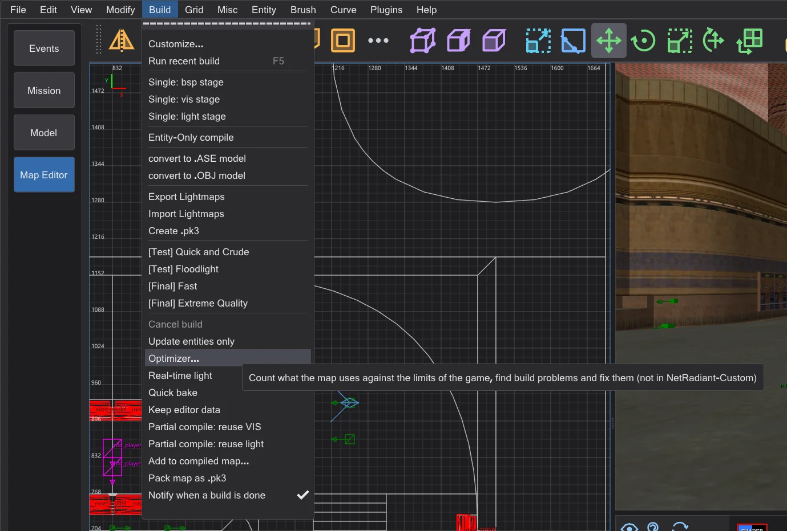
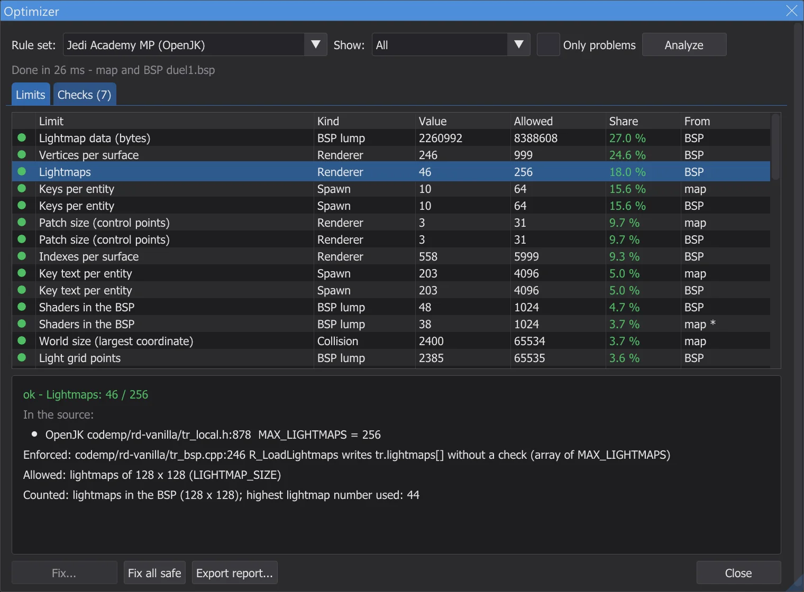
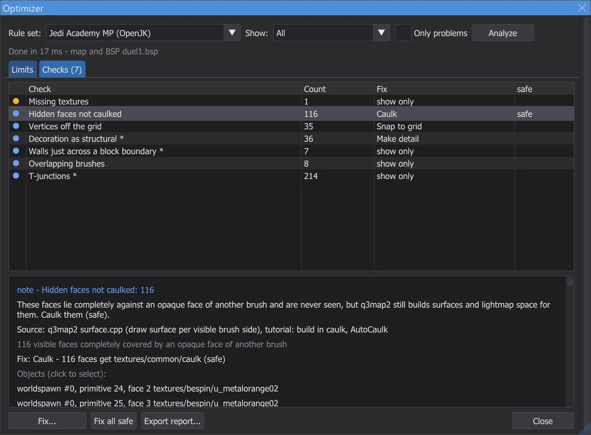
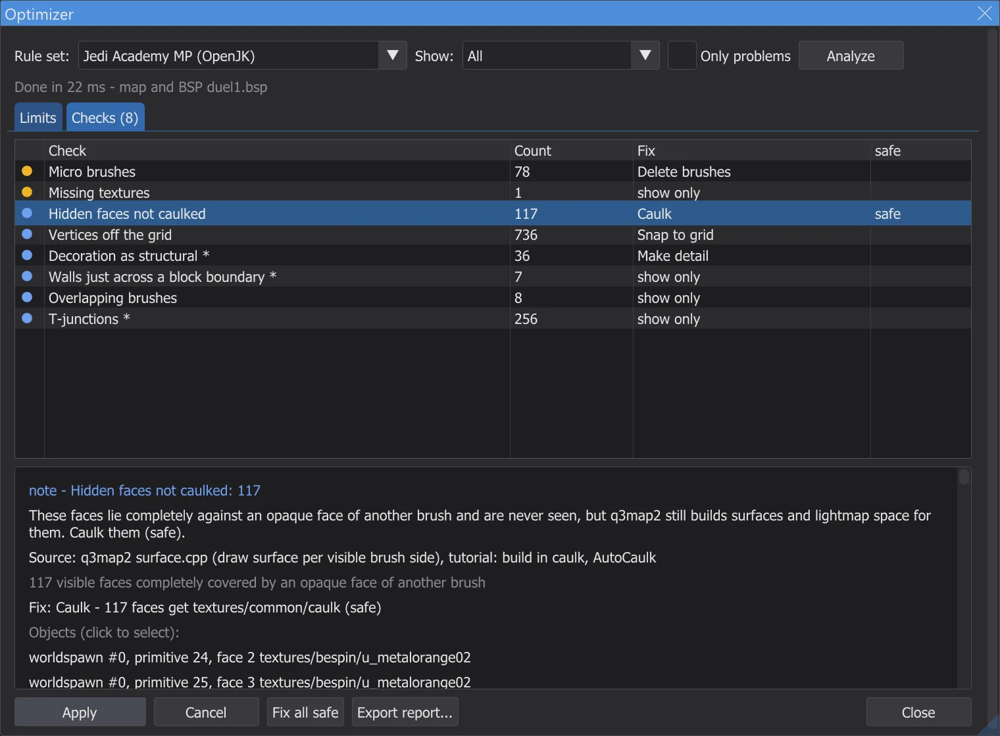
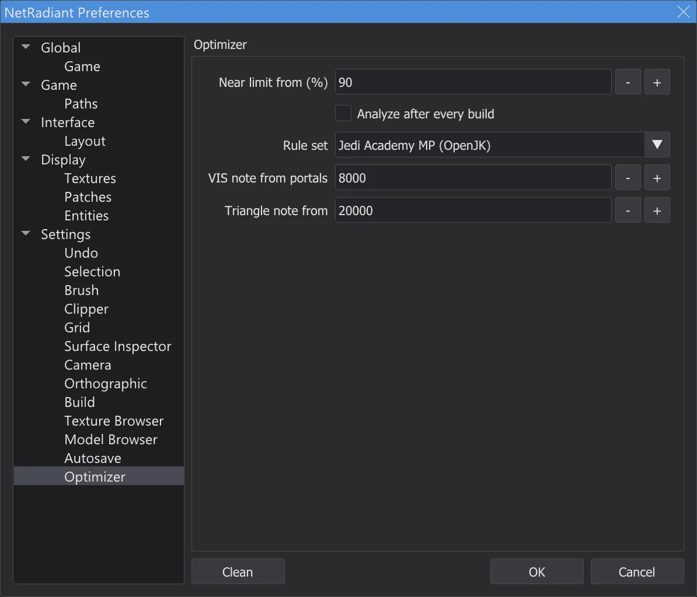

Map editor: optimizer and limits
Build > Optimizer counts what the map uses against every limit of Jedi Academy, Movie Duels and Jedi Outcast - each limit taken from the source code of the engine -, finds build problems such as leaks, uncaulked hidden faces and patches with too many collision planes, and fixes many of them at the push of a button.
Opening the optimizer#

- 1
Build > Optimizer opens the window Optimizer and analyzes the map in the background - also the largest maps; the editor stays usable meanwhile. The console shows a summary at the end.
- 2
Rule set: chooses the limits: Automatic takes the game the editor works with (Jedi Academy, Movie Duels or Jedi Outcast); Jedi Academy multiplayer can be chosen as well.
- 3
If the map was built (see Map editor: compiling the map) or opened as a compiled map (Map editor: opening and changing finished maps), the .bsp is analyzed too: light grid, lightmaps, visibility, triangles per view, the leak line of the last BSP stage. Without a .bsp only the map is counted.
- 4
On the page Optimizer of Preferences the optimizer can run by itself after every build; it opens only when there are problems.
Limits#

- ok - well below the limit. near - from 90 % of it (adjustable). over - over a limit the game enforces: the map does not load, crashes or loses something.
- note - a format limit of the .bsp file (
MAX_MAP_*inqfiles.h) that neither the engine nor q3map2 checks. Raven's own maps exceed several of them, so the optimizer never calls them over - it only notes them. - Values marked * are estimates (for example the entities that remain after spawning, or what a model costs). The column From says whether a value was counted in the map or in the .bsp.
- A click on a limit selects the largest contributors in the map and centers the views on them.
code/, multiplayer codemp/), the source of Movie Duels for Movie Duels, OpenJK with JK2_MODE and codeJK2/ for Jedi Outcast. Where a mod raises a limit, the optimizer still checks against the stricter vanilla value (for example 2048 instead of 4096 patch planes). The tables at the end of the page list each limit with file and line; the test karte_grenzen reads these lines from the sources again.Checks and fixes#

- 1
A click on a finding selects its objects and centers the 2D views and the camera on them.
- 2
Fix shows what would change; Apply does it. Every fix is one step of Undo, and the map is counted again afterwards - the finding disappears or shrinks.

The preview of a fix before it is applied. - 3
Fix all safe applies only the fixes marked safe - the ones that cannot change how the map looks or plays - in a single undo step.
- 4
Fixes that set a worldspawn key (light grid, lightmaps) take effect with the next build; the console says so. Export report writes everything with sources into a text file.

| Check | What it means | Fix | Safe |
|---|---|---|---|
| Leak | The map is not sealed: q3map2 found a way from an entity into the void (leak line). VIS and lighting need a closed hull. Show the leak with File > Pointfile and close the gap | show only | - |
| Detail brush on the leak line | Detail brushes do not seal the map. The leak line passes through these - make them structural or seal behind them | Make structural | - |
| Hidden faces not caulked | These faces lie completely against an opaque face of another brush and are never seen, but q3map2 still builds surfaces and lightmap space for them. Caulk them (safe) | Caulk | safe |
| Degenerate brushes | Brushes without a valid shape. q3map2 drops them; they only clutter the map. Delete them (safe) | Delete brushes | safe |
| Micro brushes | Brushes thinner than one unit cause BSP precision problems and splits. Delete them or make them thicker | Delete brushes | - |
| Vertices off the grid | Brush corners off whole units lead to cracks and sparkles after q3map2 snaps the planes. Snap to the 1-unit grid (safe when it is only rounding noise) | Snap to grid | safe |
| Hint or areaportal marked detail | Hint and areaportal brushes must be structural; q3map2 warns "Mixed detail and structural" and uses structural anyway. Make them structural (safe) | Make structural | safe |
| Areaportal in an entity | q3map2 allows areaportals only in the world ("areaportals only allowed in world") and skips them. Move the brush to worldspawn | show only | - |
| Decoration as structural | Small, thin or angled structural brushes split the BSP into many leafs and portals (slow VIS). Suggestion: make them detail - but never brushes that seal the map | Make detail | - |
| Walls just across a block boundary | q3map2 cuts the BSP at every _blocksize boundary (1024). A wall reaching only a little across adds cuts - align it to the boundary | show only | - |
| Overlapping brushes | Brushes that overlap cause z-fighting and double faces. Miter walls (Clipper, CSG) instead of overlapping them | show only | - |
| T-junctions | A corner lies inside the edge of another brush. q3map2 fixes these with extra vertices (more vertices per surface); align the brushes where it matters | show only | - |
| Patch near the collision limits | The engine builds collision planes and facets for every patch; over MAX_PATCH_PLANES (vanilla 2048) or MAX_FACETS the map does not load. Split the patch (bobToolz Split patch) | Split patch | - |
| Patch grid overflow | This patch subdivides to more than 129 grid columns; the engine writes past its grid (memory corruption). Split the patch or flatten it | Split patch | - |
| Clip models | misc_model with clip flags makes q3map2 build a brush per triangle (many brushes and planes). A few physics_clip brushes are usually better | show only | - |
| Missing textures | No shader script and no image found for these names - the game shows the default texture. Pick existing textures or add them to the mod | show only | - |
| Brush entity without brushes | The game stops with "SV_SetBrushModel: NULL". Give the entity brushes or delete it | Delete entities | - |
| Light grid broken | The light grid is full or does not match: cells point behind the grid, entities get wrong or no light. Set a larger worldspawn "gridsize" and relight | Set worldspawn key | - |
| Too many lightmaps | The renderer holds 256 lightmaps; near or over it set worldspawn "_lightmapscale" higher (coarser lightmaps) and relight | Set worldspawn key | - |
| Expensive VIS | Many portals make VIS slow (passage portal flow). Make decoration detail, add hint brushes, raise _blocksize | show only | - |
| Many triangles per view (estimate) | Estimated from the PVS of the worst cluster (no view frustum): what r_speeds would show at most. Block sight lines with walls, hint brushes or areaportals | show only | - |
| Spawn point in solid space | This spawn point or NPC spawner lies in solid space or outside the map (no cluster). Move it into the playable area | show only | - |
| Merge brush models | Brush models are near MAX_SUBMODELS. Brush entities with exactly the same keys and no targetname can become one model | Merge brush models | - |
| Model never drawn (misc_model_static) | The game draws a misc_model_static only when the point origin + (0 0 zoffset+1) lies in an open area. Here it lies in solid space, so the model never appears (OpenJK#1358). Fix: a zoffset that moves only this cull point out of the solid; the model stays where it is | Set entity key | - |
| common/origin instead of system/origin | Jedi Academy and Jedi Outcast know only textures/system/origin as origin brush. With common/origin q3map2 builds a normal brush and the entity ends up at 0 0 0 (NRC#270). Fix: replace the texture with system/origin | Replace texture | - |
| Huge brushes | Very large brushes - for example a sky box made of a few giant brushes - lose precision in q3map2 and can leak (GtkRadiant#271). Build the hull from smaller brushes | show only | - |
| Surface light under solid brushes | q3map2 lights every light-emitting surface (lava, light panels) also from a copy 23 units in front of it (backsplash). If a solid brush lies closer than that, this light appears on its other side - light shines through the floor (GL#189, NRC#144). Move the brush away, shorten the light surface or set q3map_backsplash 0 0 in the shader | show only | - |
| Build switches this game cannot use | External lightmaps (-external, or -lightmapsize other than 128) do not work in Jedi Outcast (NRC#98) and not together with light styles in any game (NRC#48). The build menu refuses such entries; remove the switch under Build > Customize | show only | - |
| External lightmaps from shaders | A shader with q3map_lightmapSize other than 128 gets an external lightmap. In Jedi Academy and Movie Duels light styles then lose their lightmap stages on these surfaces (NRC#48, a limit of q3map2 for RBSP); Jedi Outcast cannot load external lightmaps at all (NRC#98). Remove q3map_lightmapSize from the shader, or do not use light styles (switchable or flickering lights) near these surfaces | show only | - |
Settings#

Near limit from (%) sets from which share a limit counts as near, Analyze after every build runs the optimizer after every build, Rule set fixes the rule set, VIS note from portals and Triangle note from are the thresholds for the VIS and triangle notes.
The limits of each game#
Allowed is the value the optimizer checks against - one less than the define where the engine itself takes a slot (for example the world model or the box model), and the stricter vanilla value where a mod raised it. The source column names every place: the define and the line that stops the game.
Jedi Academy (OpenJK SP)
| Limit | In the source | Allowed | Kind | Exceeded | Source (file:line) |
|---|---|---|---|---|---|
| Entities in the BSP | MAX_MAP_ENTITIES = 2048 | 2048 | BSP lump | note | OpenJK code/qcommon/qfiles.h:214 MAX_MAP_ENTITIES |
| Entity text (bytes) | MAX_MAP_ENTSTRING = 262144 | 262144 | BSP lump | note | OpenJK code/qcommon/qfiles.h:215 MAX_MAP_ENTSTRING |
| Shaders in the BSP | MAX_MAP_SHADERS = 1024 | 1024 | BSP lump | note | OpenJK code/qcommon/qfiles.h:216 MAX_MAP_SHADERS |
| Models in the BSP | MAX_MAP_MODELS = 1024 | 1024 | BSP lump | note | OpenJK code/qcommon/qfiles.h:212 MAX_MAP_MODELS |
| Brushes | MAX_MAP_BRUSHES = 32768 | 32768 | BSP lump | note | OpenJK code/qcommon/qfiles.h:213 MAX_MAP_BRUSHES |
| Brush sides | MAX_MAP_BRUSHSIDES = 131072 | 131072 | BSP lump | note | OpenJK code/qcommon/qfiles.h:222 MAX_MAP_BRUSHSIDES |
| Planes | MAX_MAP_PLANES = 131072 | 131072 | BSP lump | note | OpenJK code/qcommon/qfiles.h:220 MAX_MAP_PLANES |
| BSP nodes | MAX_MAP_NODES = 131072 | 131072 | BSP lump | note | OpenJK code/qcommon/qfiles.h:221 MAX_MAP_NODES |
| Leafs | MAX_MAP_LEAFS = 131072 | 131072 | BSP lump | note | OpenJK code/qcommon/qfiles.h:223 MAX_MAP_LEAFS |
| Leaf surfaces | MAX_MAP_LEAFFACES = 131072 | 131072 | BSP lump | note | OpenJK code/qcommon/qfiles.h:224 MAX_MAP_LEAFFACES |
| Leaf brushes | MAX_MAP_LEAFBRUSHES = 262144 | 262144 | BSP lump | note | OpenJK code/qcommon/qfiles.h:225 MAX_MAP_LEAFBRUSHES |
| Draw surfaces | MAX_MAP_DRAW_SURFS = 131072 | 131072 | BSP lump | note | OpenJK code/qcommon/qfiles.h:233 MAX_MAP_DRAW_SURFS |
| Draw vertices | MAX_MAP_DRAW_VERTS = 524288 | 524288 | BSP lump | note | OpenJK code/qcommon/qfiles.h:234 MAX_MAP_DRAW_VERTS |
| Draw indexes | MAX_MAP_DRAW_INDEXES = 524288 | 524288 | BSP lump | note | OpenJK code/qcommon/qfiles.h:235 MAX_MAP_DRAW_INDEXES |
| Fogs in the BSP | MAX_MAP_FOGS = 256 | 256 | BSP lump | note | OpenJK code/qcommon/qfiles.h:219 MAX_MAP_FOGS |
| Lightmap data (bytes) | MAX_MAP_LIGHTING = 8388608 | 8388608 | BSP lump | note | OpenJK code/qcommon/qfiles.h:227 MAX_MAP_LIGHTING |
| Visibility data (bytes) | MAX_MAP_VISIBILITY = 4194304 | 4194304 | BSP lump | note | OpenJK code/qcommon/qfiles.h:231 MAX_MAP_VISIBILITY |
| Portals | MAX_MAP_PORTALS = 131072 | 131072 | BSP lump | note | OpenJK code/qcommon/qfiles.h:226 MAX_MAP_PORTALS |
| Light grid points | MAX_MAP_LIGHTGRID = 65535 | 65535 | BSP lump | over | OpenJK code/qcommon/qfiles.h:228 MAX_MAP_LIGHTGRID; q3map2 tools/quake3/q3map2/bspfile_rbsp.cpp:82 MAX_MAP_GRID |
| Light grid cells | MAX_MAP_LIGHTGRID_ARRAY = 1048576 | 1048576 | BSP lump | note | OpenJK code/qcommon/qfiles.h:229 MAX_MAP_LIGHTGRID_ARRAY; q3map2 tools/quake3/q3map2/q3map2.h:210 MAX_MAP_LIGHTGRID |
| Areas | MAX_MAP_AREAS = 256 | 256 | BSP lump | over | OpenJK code/qcommon/qfiles.h:218 MAX_MAP_AREAS; OpenJK code/qcommon/q_shared.h:228 MAX_MAP_AREA_BYTES; q3map2 tools/quake3/q3map2/q3map2.h:203 MAX_MAP_AREAS |
| Vertices per surface | SHADER_MAX_VERTEXES = 1000 | 999 | Renderer | over | OpenJK code/qcommon/qfiles.h:33 SHADER_MAX_VERTEXES; q3map2 tools/quake3/q3map2/games.cpp:756 |
| Indexes per surface | SHADER_MAX_INDEXES = 6000 | 5999 | Renderer | over | OpenJK code/qcommon/qfiles.h:34 SHADER_MAX_INDEXES |
| Lightmaps | MAX_LIGHTMAPS = 256 | 256 | Renderer | over | OpenJK code/rd-vanilla/tr_local.h:843 MAX_LIGHTMAPS |
| Fogs (sort bits) | QSORT_FOGNUM_SHIFT = 30 | 30 | Renderer | over | OpenJK code/rd-vanilla/tr_local.h:874 QSORT_FOGNUM_SHIFT; OpenJK code/rd-vanilla/tr_local.h:875 QSORT_REFENTITYNUM_SHIFT; q3map2 tools/quake3/q3map2/q3map2.h:206 MAX_RBSP_FOGS |
| Patch size (control points) | MAX_PATCH_SIZE = 32 | 31 | Renderer | over | OpenJK code/rd-vanilla/tr_local.h:592 MAX_PATCH_SIZE; q3map2 tools/quake3/q3map2/q3map2.h:126 MAX_PATCH_SIZE |
| Surfaces per view (estimate) | MAX_DRAWSURFS = 65536 | 65536 | Renderer | over | OpenJK code/rd-vanilla/tr_local.h:847 MAX_DRAWSURFS |
| Shaders loaded | MAX_SHADERS = 8192 | 8192 | Renderer | over | OpenJK code/rd-vanilla/tr_local.h:43 SHADERNUM_BITS; OpenJK code/rd-vanilla/tr_local.h:44 MAX_SHADERS |
| Skins loaded | MAX_SKINS = 512 | 512 | Renderer | over | OpenJK code/rd-vanilla/tr_local.h:844 MAX_SKINS |
| Brush models (incl. world) | MAX_SUBMODELS = 512 | 511 | Collision | over | OpenJK code/qcommon/q_shared.h:642 MAX_SUBMODELS; OpenJK code/qcommon/cm_local.h:31 BOX_MODEL_HANDLE |
| Collision planes per patch | MAX_PATCH_PLANES = 4096 | 2048 | Collision | over | OpenJK code/qcommon/cm_patch.h:65 MAX_PATCH_PLANES |
| Collision facets per patch | MAX_FACETS = 1024 | 1024 | Collision | over | OpenJK code/qcommon/cm_patch.h:64 MAX_FACETS |
| Control points per patch | MAX_PATCH_VERTS = 1024 | 1024 | Collision | over | OpenJK code/qcommon/cm_load.cpp:527 MAX_PATCH_VERTS |
| World size (largest coordinate) | MAX_MAP_BOUNDS = 65535 | 65534 | Collision | over | OpenJK code/qcommon/cm_polylib.h:44 MAX_MAP_BOUNDS; OpenJK code/qcommon/q_shared.h:802 MAX_WORLD_COORD; q3map2 tools/quake3/common/maxworld.h:4 MAX_WORLD_COORD |
| Entities after spawn | MAX_GENTITIES = 1024 | 1021 | Runtime | over | OpenJK code/qcommon/q_shared.h:621 GENTITYNUM_BITS; OpenJK code/qcommon/q_shared.h:618 MAX_CLIENTS |
| Models (configstrings) | MAX_MODELS = 256 | 255 | Runtime | over | OpenJK code/qcommon/q_shared.h:632 MAX_MODELS |
| Sounds (configstrings) | MAX_SOUNDS = 380 | 379 | Runtime | over | OpenJK code/qcommon/q_shared.h:637 MAX_SOUNDS |
| Effects (configstrings) | MAX_FX = 128 | 127 | Runtime | over | OpenJK code/qcommon/q_shared.h:644 MAX_FX |
| World effects (rain, snow, wind) | MAX_WORLD_FX = 66 | 65 | Runtime | over | OpenJK code/qcommon/q_shared.h:649 MAX_WORLD_FX |
| Configstring text (lower bound) | MAX_GAMESTATE_CHARS = 16000 | 16000 | Runtime | over | OpenJK code/qcommon/q_shared.h:730 MAX_GAMESTATE_CHARS |
| ROFF files | MAX_ROFFS = 128 | 128 | Runtime | over | OpenJK code/game/g_roff.h:34 MAX_ROFFS |
| NPC models per level | MAX_MODELS_PER_LEVEL = 60 | 60 | Runtime | over | OpenJK code/game/NPC_stats.cpp:43 MAX_MODELS_PER_LEVEL |
| Sub-BSPs (misc_bsp) | MAX_SUB_BSP = 32 | 31 | Runtime | over | OpenJK code/qcommon/q_shared.h:640 MAX_SUB_BSP |
| Keys per entity | MAX_SPAWN_VARS = 64 | 64 | Spawn | over | OpenJK code/game/g_local.h:221 MAX_SPAWN_VARS |
| Key text per entity | MAX_SPAWN_VARS_CHARS = 2048 | 2048 | Spawn | over | OpenJK code/game/g_local.h:222 MAX_SPAWN_VARS_CHARS |
| Switchable light styles | MAX_SWITCHED_LIGHTS = 32 | 32 | Compiler (q3map2) | over | q3map2 tools/quake3/q3map2/q3map2.h:193 MAX_SWITCHED_LIGHTS |
| Visibility data (q3map2) | MAX_MAP_VISIBILITY = 33554440 | 33554440 | Compiler (q3map2) | over | q3map2 tools/quake3/q3map2/q3map2.h:147 VIS_HEADER_SIZE; q3map2 tools/quake3/q3map2/q3map2.h:211 MAX_MAP_VISCLUSTERS; q3map2 tools/quake3/q3map2/q3map2.h:212 MAX_MAP_VISIBILITY |
Jedi Academy MP (OpenJK)
| Limit | In the source | Allowed | Kind | Exceeded | Source (file:line) |
|---|---|---|---|---|---|
| Entities in the BSP | MAX_MAP_ENTITIES = 2048 | 2048 | BSP lump | note | OpenJK codemp/qcommon/qfiles.h:316 MAX_MAP_ENTITIES |
| Entity text (bytes) | MAX_MAP_ENTSTRING = 262144 | 262144 | BSP lump | note | OpenJK codemp/qcommon/qfiles.h:317 MAX_MAP_ENTSTRING |
| Shaders in the BSP | MAX_MAP_SHADERS = 1024 | 1024 | BSP lump | note | OpenJK codemp/qcommon/qfiles.h:318 MAX_MAP_SHADERS |
| Models in the BSP | MAX_MAP_MODELS = 1024 | 1024 | BSP lump | note | OpenJK codemp/qcommon/qfiles.h:314 MAX_MAP_MODELS |
| Brushes | MAX_MAP_BRUSHES = 32768 | 32768 | BSP lump | note | OpenJK codemp/qcommon/qfiles.h:315 MAX_MAP_BRUSHES |
| Brush sides | MAX_MAP_BRUSHSIDES = 131072 | 131072 | BSP lump | note | OpenJK codemp/qcommon/qfiles.h:324 MAX_MAP_BRUSHSIDES |
| Planes | MAX_MAP_PLANES = 131072 | 131072 | BSP lump | note | OpenJK codemp/qcommon/qfiles.h:322 MAX_MAP_PLANES |
| BSP nodes | MAX_MAP_NODES = 131072 | 131072 | BSP lump | note | OpenJK codemp/qcommon/qfiles.h:323 MAX_MAP_NODES |
| Leafs | MAX_MAP_LEAFS = 131072 | 131072 | BSP lump | note | OpenJK codemp/qcommon/qfiles.h:325 MAX_MAP_LEAFS |
| Leaf surfaces | MAX_MAP_LEAFFACES = 131072 | 131072 | BSP lump | note | OpenJK codemp/qcommon/qfiles.h:326 MAX_MAP_LEAFFACES |
| Leaf brushes | MAX_MAP_LEAFBRUSHES = 262144 | 262144 | BSP lump | note | OpenJK codemp/qcommon/qfiles.h:327 MAX_MAP_LEAFBRUSHES |
| Draw surfaces | MAX_MAP_DRAW_SURFS = 131072 | 131072 | BSP lump | note | OpenJK codemp/qcommon/qfiles.h:334 MAX_MAP_DRAW_SURFS |
| Draw vertices | MAX_MAP_DRAW_VERTS = 524288 | 524288 | BSP lump | note | OpenJK codemp/qcommon/qfiles.h:335 MAX_MAP_DRAW_VERTS |
| Draw indexes | MAX_MAP_DRAW_INDEXES = 524288 | 524288 | BSP lump | note | OpenJK codemp/qcommon/qfiles.h:336 MAX_MAP_DRAW_INDEXES |
| Fogs in the BSP | MAX_MAP_FOGS = 256 | 256 | BSP lump | note | OpenJK codemp/qcommon/qfiles.h:321 MAX_MAP_FOGS |
| Lightmap data (bytes) | MAX_MAP_LIGHTING = 8388608 | 8388608 | BSP lump | note | OpenJK codemp/qcommon/qfiles.h:329 MAX_MAP_LIGHTING |
| Visibility data (bytes) | MAX_MAP_VISIBILITY = 6291456 | 6291456 | BSP lump | note | OpenJK codemp/qcommon/qfiles.h:332 MAX_MAP_VISIBILITY |
| Portals | MAX_MAP_PORTALS = 131072 | 131072 | BSP lump | note | OpenJK codemp/qcommon/qfiles.h:328 MAX_MAP_PORTALS |
| Light grid points | MAX_MAP_LIGHTGRID = 65535 | 65535 | BSP lump | over | OpenJK codemp/qcommon/qfiles.h:330 MAX_MAP_LIGHTGRID; q3map2 tools/quake3/q3map2/bspfile_rbsp.cpp:82 MAX_MAP_GRID |
| Light grid cells | MAX_MAP_LIGHTGRID_ARRAY = 1048576 | 1048576 | BSP lump | note | OpenJK codemp/qcommon/qfiles.h:331 MAX_MAP_LIGHTGRID_ARRAY; q3map2 tools/quake3/q3map2/q3map2.h:210 MAX_MAP_LIGHTGRID |
| Areas | MAX_MAP_AREAS = 256 | 256 | BSP lump | over | OpenJK codemp/qcommon/qfiles.h:320 MAX_MAP_AREAS; OpenJK codemp/qcommon/q_shared.h:222 MAX_MAP_AREA_BYTES; q3map2 tools/quake3/q3map2/q3map2.h:203 MAX_MAP_AREAS |
| Vertices per surface | SHADER_MAX_VERTEXES = 1000 | 999 | Renderer | over | OpenJK codemp/qcommon/qfiles.h:34 SHADER_MAX_VERTEXES; q3map2 tools/quake3/q3map2/games.cpp:756 |
| Indexes per surface | SHADER_MAX_INDEXES = 6000 | 5999 | Renderer | over | OpenJK codemp/qcommon/qfiles.h:35 SHADER_MAX_INDEXES |
| Lightmaps | MAX_LIGHTMAPS = 256 | 256 | Renderer | over | OpenJK codemp/rd-vanilla/tr_local.h:878 MAX_LIGHTMAPS |
| Fogs (sort bits) | QSORT_FOGNUM_SHIFT = 30 | 30 | Renderer | over | OpenJK codemp/rd-vanilla/tr_local.h:897 QSORT_FOGNUM_SHIFT; OpenJK codemp/rd-vanilla/tr_local.h:898 QSORT_REFENTITYNUM_SHIFT; q3map2 tools/quake3/q3map2/q3map2.h:206 MAX_RBSP_FOGS |
| Patch size (control points) | MAX_PATCH_SIZE = 32 | 31 | Renderer | over | OpenJK codemp/rd-vanilla/tr_local.h:648 MAX_PATCH_SIZE; q3map2 tools/quake3/q3map2/q3map2.h:126 MAX_PATCH_SIZE |
| Surfaces per view (estimate) | MAX_DRAWSURFS = 65536 | 65536 | Renderer | over | OpenJK codemp/rd-vanilla/tr_local.h:882 MAX_DRAWSURFS |
| Shaders loaded | MAX_SHADERS = 16384 | 16384 | Renderer | over | OpenJK codemp/rd-vanilla/tr_local.h:40 SHADERNUM_BITS; OpenJK codemp/rd-vanilla/tr_local.h:41 MAX_SHADERS |
| Skins loaded | MAX_SKINS = 1024 | 1024 | Renderer | over | OpenJK codemp/rd-vanilla/tr_local.h:879 MAX_SKINS |
| Brush models (incl. world) | MAX_SUBMODELS = 512 | 510 | Collision | over | OpenJK codemp/qcommon/cm_local.h:30 MAX_SUBMODELS; OpenJK codemp/qcommon/cm_local.h:31 BOX_MODEL_HANDLE |
| Collision planes per patch | MAX_PATCH_PLANES = 4096 | 2048 | Collision | over | OpenJK codemp/qcommon/cm_patch.h:67 MAX_PATCH_PLANES |
| Collision facets per patch | MAX_FACETS = 1024 | 1024 | Collision | over | OpenJK codemp/qcommon/cm_patch.h:66 MAX_FACETS |
| Control points per patch | MAX_PATCH_VERTS = 1024 | 1024 | Collision | over | OpenJK codemp/qcommon/cm_load.cpp:519 MAX_PATCH_VERTS |
| World size (largest coordinate) | MAX_MAP_BOUNDS = 65535 | 65534 | Collision | over | OpenJK codemp/qcommon/cm_polylib.h:44 MAX_MAP_BOUNDS; OpenJK codemp/qcommon/q_shared.h:54 MAX_WORLD_COORD; q3map2 tools/quake3/common/maxworld.h:4 MAX_WORLD_COORD |
| Entities after spawn | MAX_GENTITIES = 1024 | 990 | Runtime | over | OpenJK codemp/qcommon/q_shared.h:895 GENTITYNUM_BITS; OpenJK codemp/qcommon/q_shared.h:890 MAX_CLIENTS |
| Models (configstrings) | MAX_MODELS = 512 | 511 | Runtime | over | OpenJK codemp/qcommon/q_shared.h:920 MAX_MODELS |
| Sounds (configstrings) | MAX_SOUNDS = 256 | 255 | Runtime | over | OpenJK codemp/qcommon/q_shared.h:921 MAX_SOUNDS |
| Effects (configstrings) | MAX_FX = 64 | 63 | Runtime | over | OpenJK codemp/qcommon/q_shared.h:923 MAX_FX |
| Configstring text (lower bound) | MAX_GAMESTATE_CHARS = 16000 | 16000 | Runtime | over | OpenJK codemp/qcommon/q_shared.h:946 MAX_GAMESTATE_CHARS |
| Sub-BSPs (misc_bsp) | MAX_SUB_BSP = 32 | 32 | Runtime | over | OpenJK codemp/qcommon/q_shared.h:925 MAX_SUB_BSP |
| Keys per entity | MAX_SPAWN_VARS = 64 | 64 | Spawn | over | OpenJK codemp/game/bg_public.h:36 MAX_SPAWN_VARS |
| Key text per entity | MAX_SPAWN_VARS_CHARS = 4096 | 4096 | Spawn | over | OpenJK codemp/game/bg_public.h:37 MAX_SPAWN_VARS_CHARS |
| Switchable light styles | MAX_SWITCHED_LIGHTS = 32 | 32 | Compiler (q3map2) | over | q3map2 tools/quake3/q3map2/q3map2.h:193 MAX_SWITCHED_LIGHTS |
| Visibility data (q3map2) | MAX_MAP_VISIBILITY = 33554440 | 33554440 | Compiler (q3map2) | over | q3map2 tools/quake3/q3map2/q3map2.h:147 VIS_HEADER_SIZE; q3map2 tools/quake3/q3map2/q3map2.h:211 MAX_MAP_VISCLUSTERS; q3map2 tools/quake3/q3map2/q3map2.h:212 MAX_MAP_VISIBILITY |
Movie Duels
| Limit | In the source | Allowed | Kind | Exceeded | Source (file:line) |
|---|---|---|---|---|---|
| Entities in the BSP | MAX_MAP_ENTITIES = 2048 | 2048 | BSP lump | note | MovieDuels code/qcommon/qfiles.h:321 MAX_MAP_ENTITIES |
| Entity text (bytes) | MAX_MAP_ENTSTRING = 262144 | 262144 | BSP lump | note | MovieDuels code/qcommon/qfiles.h:322 MAX_MAP_ENTSTRING |
| Shaders in the BSP | MAX_MAP_SHADERS = 1024 | 1024 | BSP lump | note | MovieDuels code/qcommon/qfiles.h:323 MAX_MAP_SHADERS |
| Models in the BSP | MAX_MAP_MODELS = 1024 | 1024 | BSP lump | note | MovieDuels code/qcommon/qfiles.h:319 MAX_MAP_MODELS |
| Brushes | MAX_MAP_BRUSHES = 32768 | 32768 | BSP lump | note | MovieDuels code/qcommon/qfiles.h:320 MAX_MAP_BRUSHES |
| Brush sides | MAX_MAP_BRUSHSIDES = 131072 | 131072 | BSP lump | note | MovieDuels code/qcommon/qfiles.h:329 MAX_MAP_BRUSHSIDES |
| Planes | MAX_MAP_PLANES = 131072 | 131072 | BSP lump | note | MovieDuels code/qcommon/qfiles.h:327 MAX_MAP_PLANES |
| BSP nodes | MAX_MAP_NODES = 131072 | 131072 | BSP lump | note | MovieDuels code/qcommon/qfiles.h:328 MAX_MAP_NODES |
| Leafs | MAX_MAP_LEAFS = 131072 | 131072 | BSP lump | note | MovieDuels code/qcommon/qfiles.h:330 MAX_MAP_LEAFS |
| Leaf surfaces | MAX_MAP_LEAFFACES = 131072 | 131072 | BSP lump | note | MovieDuels code/qcommon/qfiles.h:331 MAX_MAP_LEAFFACES |
| Leaf brushes | MAX_MAP_LEAFBRUSHES = 262144 | 262144 | BSP lump | note | MovieDuels code/qcommon/qfiles.h:332 MAX_MAP_LEAFBRUSHES |
| Draw surfaces | MAX_MAP_DRAW_SURFS = 131072 | 131072 | BSP lump | note | MovieDuels code/qcommon/qfiles.h:340 MAX_MAP_DRAW_SURFS |
| Draw vertices | MAX_MAP_DRAW_VERTS = 524288 | 524288 | BSP lump | note | MovieDuels code/qcommon/qfiles.h:341 MAX_MAP_DRAW_VERTS |
| Draw indexes | MAX_MAP_DRAW_INDEXES = 524288 | 524288 | BSP lump | note | MovieDuels code/qcommon/qfiles.h:342 MAX_MAP_DRAW_INDEXES |
| Fogs in the BSP | MAX_MAP_FOGS = 256 | 256 | BSP lump | note | MovieDuels code/qcommon/qfiles.h:326 MAX_MAP_FOGS |
| Lightmap data (bytes) | MAX_MAP_LIGHTING = 8388608 | 8388608 | BSP lump | note | MovieDuels code/qcommon/qfiles.h:334 MAX_MAP_LIGHTING |
| Visibility data (bytes) | MAX_MAP_VISIBILITY = 4194304 | 4194304 | BSP lump | note | MovieDuels code/qcommon/qfiles.h:338 MAX_MAP_VISIBILITY |
| Portals | MAX_MAP_PORTALS = 131072 | 131072 | BSP lump | note | MovieDuels code/qcommon/qfiles.h:333 MAX_MAP_PORTALS |
| Light grid points | MAX_MAP_LIGHTGRID = 65535 | 65535 | BSP lump | over | MovieDuels code/qcommon/qfiles.h:335 MAX_MAP_LIGHTGRID; q3map2 tools/quake3/q3map2/bspfile_rbsp.cpp:82 MAX_MAP_GRID |
| Light grid cells | MAX_MAP_LIGHTGRID_ARRAY = 1048576 | 1048576 | BSP lump | note | MovieDuels code/qcommon/qfiles.h:336 MAX_MAP_LIGHTGRID_ARRAY; q3map2 tools/quake3/q3map2/q3map2.h:210 MAX_MAP_LIGHTGRID |
| Areas | MAX_MAP_AREAS = 256 | 256 | BSP lump | over | MovieDuels code/qcommon/qfiles.h:325 MAX_MAP_AREAS; MovieDuels code/qcommon/q_shared.h:222 MAX_MAP_AREA_BYTES; q3map2 tools/quake3/q3map2/q3map2.h:203 MAX_MAP_AREAS |
| Vertices per surface | SHADER_MAX_VERTEXES = 1000 | 999 | Renderer | over | MovieDuels code/qcommon/qfiles.h:33 SHADER_MAX_VERTEXES; q3map2 tools/quake3/q3map2/games.cpp:756 |
| Indexes per surface | SHADER_MAX_INDEXES = 6000 | 5999 | Renderer | over | MovieDuels code/qcommon/qfiles.h:34 SHADER_MAX_INDEXES |
| Lightmaps | MAX_LIGHTMAPS = 256 | 256 | Renderer | over | MovieDuels code/rd-vanilla/tr_local.h:827 MAX_LIGHTMAPS |
| Fogs (sort bits) | QSORT_FOGNUM_SHIFT = 30 | 30 | Renderer | over | MovieDuels code/rd-vanilla/tr_local.h:857 QSORT_FOGNUM_SHIFT; MovieDuels code/rd-vanilla/tr_local.h:858 QSORT_REFENTITYNUM_SHIFT; q3map2 tools/quake3/q3map2/q3map2.h:206 MAX_RBSP_FOGS |
| Patch size (control points) | MAX_PATCH_SIZE = 32 | 31 | Renderer | over | MovieDuels code/rd-vanilla/tr_local.h:576 MAX_PATCH_SIZE; q3map2 tools/quake3/q3map2/q3map2.h:126 MAX_PATCH_SIZE |
| Surfaces per view (estimate) | MAX_DRAWSURFS = 65536 | 65536 | Renderer | over | MovieDuels code/rd-vanilla/tr_local.h:830 MAX_DRAWSURFS |
| Shaders loaded | MAX_SHADERS = 8192 | 8192 | Renderer | over | MovieDuels code/rd-vanilla/tr_local.h:42 SHADERNUM_BITS; MovieDuels code/rd-vanilla/tr_local.h:43 MAX_SHADERS |
| Skins loaded | MAX_SKINS = 1024 | 1024 | Renderer | over | MovieDuels code/rd-vanilla/tr_local.h:828 MAX_SKINS |
| Brush models (incl. world) | MAX_SUBMODELS = 512 | 511 | Collision | over | MovieDuels code/qcommon/q_shared.h:684 MAX_SUBMODELS; MovieDuels code/qcommon/cm_local.h:31 BOX_MODEL_HANDLE |
| Collision planes per patch | MAX_PATCH_PLANES = 8192 | 8192 | Collision | over | MovieDuels code/qcommon/cm_patch.h:62 MAX_PATCH_PLANES |
| Collision facets per patch | MAX_FACETS = 4096 | 4096 | Collision | over | MovieDuels code/qcommon/cm_patch.h:61 MAX_FACETS |
| Control points per patch | MAX_PATCH_VERTS = 1024 | 1024 | Collision | over | MovieDuels code/qcommon/cm_load.cpp:545 MAX_PATCH_VERTS |
| World size (largest coordinate) | MAX_MAP_BOUNDS = 65535 | 65534 | Collision | over | MovieDuels code/qcommon/cm_polylib.h:44 MAX_MAP_BOUNDS; MovieDuels code/qcommon/q_shared.h:924 MAX_WORLD_COORD; q3map2 tools/quake3/common/maxworld.h:4 MAX_WORLD_COORD |
| Entities after spawn | MAX_GENTITIES = 4096 | 4093 | Runtime | over | MovieDuels code/qcommon/q_shared.h:668 GENTITYNUM_BITS; MovieDuels code/qcommon/q_shared.h:665 MAX_CLIENTS |
| Models (configstrings) | MAX_MODELS = 512 | 511 | Runtime | over | MovieDuels code/qcommon/q_shared.h:678 MAX_MODELS |
| Sounds (configstrings) | MAX_SOUNDS = 512 | 511 | Runtime | over | MovieDuels code/qcommon/q_shared.h:680 MAX_SOUNDS |
| Effects (configstrings) | MAX_FX = 256 | 255 | Runtime | over | MovieDuels code/qcommon/q_shared.h:686 MAX_FX |
| World effects (rain, snow, wind) | MAX_WORLD_FX = 128 | 127 | Runtime | over | MovieDuels code/qcommon/q_shared.h:693 MAX_WORLD_FX |
| Configstring text (lower bound) | MAX_GAMESTATE_CHARS = 32000 | 32000 | Runtime | over | MovieDuels code/qcommon/q_shared.h:769 MAX_GAMESTATE_CHARS |
| ROFF files | MAX_ROFFS = 128 | 128 | Runtime | over | MovieDuels code/game/g_roff.h:32 MAX_ROFFS |
| NPC models per level | MAX_MODELS_PER_LEVEL = 120 | 120 | Runtime | over | MovieDuels code/game/NPC_stats.cpp:66 MAX_MODELS_PER_LEVEL |
| Sub-BSPs (misc_bsp) | MAX_SUB_BSP = 32 | 31 | Runtime | over | MovieDuels code/qcommon/q_shared.h:682 MAX_SUB_BSP |
| Keys per entity | MAX_SPAWN_VARS = 64 | 64 | Spawn | over | MovieDuels code/game/g_local.h:245 MAX_SPAWN_VARS |
| Key text per entity | MAX_SPAWN_VARS_CHARS = 2048 | 2048 | Spawn | over | MovieDuels code/game/g_local.h:246 MAX_SPAWN_VARS_CHARS |
| Switchable light styles | MAX_SWITCHED_LIGHTS = 32 | 32 | Compiler (q3map2) | over | q3map2 tools/quake3/q3map2/q3map2.h:193 MAX_SWITCHED_LIGHTS |
| Visibility data (q3map2) | MAX_MAP_VISIBILITY = 33554440 | 33554440 | Compiler (q3map2) | over | q3map2 tools/quake3/q3map2/q3map2.h:147 VIS_HEADER_SIZE; q3map2 tools/quake3/q3map2/q3map2.h:211 MAX_MAP_VISCLUSTERS; q3map2 tools/quake3/q3map2/q3map2.h:212 MAX_MAP_VISIBILITY |
Jedi Outcast (OpenJK JK2_MODE)
| Limit | In the source | Allowed | Kind | Exceeded | Source (file:line) |
|---|---|---|---|---|---|
| Entities in the BSP | MAX_MAP_ENTITIES = 2048 | 2048 | BSP lump | note | OpenJK code/qcommon/qfiles.h:214 MAX_MAP_ENTITIES |
| Entity text (bytes) | MAX_MAP_ENTSTRING = 262144 | 262144 | BSP lump | note | OpenJK code/qcommon/qfiles.h:215 MAX_MAP_ENTSTRING |
| Shaders in the BSP | MAX_MAP_SHADERS = 1024 | 1024 | BSP lump | note | OpenJK code/qcommon/qfiles.h:216 MAX_MAP_SHADERS |
| Models in the BSP | MAX_MAP_MODELS = 1024 | 1024 | BSP lump | note | OpenJK code/qcommon/qfiles.h:212 MAX_MAP_MODELS |
| Brushes | MAX_MAP_BRUSHES = 32768 | 32768 | BSP lump | note | OpenJK code/qcommon/qfiles.h:213 MAX_MAP_BRUSHES |
| Brush sides | MAX_MAP_BRUSHSIDES = 131072 | 131072 | BSP lump | note | OpenJK code/qcommon/qfiles.h:222 MAX_MAP_BRUSHSIDES |
| Planes | MAX_MAP_PLANES = 131072 | 131072 | BSP lump | note | OpenJK code/qcommon/qfiles.h:220 MAX_MAP_PLANES |
| BSP nodes | MAX_MAP_NODES = 131072 | 131072 | BSP lump | note | OpenJK code/qcommon/qfiles.h:221 MAX_MAP_NODES |
| Leafs | MAX_MAP_LEAFS = 131072 | 131072 | BSP lump | note | OpenJK code/qcommon/qfiles.h:223 MAX_MAP_LEAFS |
| Leaf surfaces | MAX_MAP_LEAFFACES = 131072 | 131072 | BSP lump | note | OpenJK code/qcommon/qfiles.h:224 MAX_MAP_LEAFFACES |
| Leaf brushes | MAX_MAP_LEAFBRUSHES = 262144 | 262144 | BSP lump | note | OpenJK code/qcommon/qfiles.h:225 MAX_MAP_LEAFBRUSHES |
| Draw surfaces | MAX_MAP_DRAW_SURFS = 131072 | 131072 | BSP lump | note | OpenJK code/qcommon/qfiles.h:233 MAX_MAP_DRAW_SURFS |
| Draw vertices | MAX_MAP_DRAW_VERTS = 524288 | 524288 | BSP lump | note | OpenJK code/qcommon/qfiles.h:234 MAX_MAP_DRAW_VERTS |
| Draw indexes | MAX_MAP_DRAW_INDEXES = 524288 | 524288 | BSP lump | note | OpenJK code/qcommon/qfiles.h:235 MAX_MAP_DRAW_INDEXES |
| Fogs in the BSP | MAX_MAP_FOGS = 256 | 256 | BSP lump | note | OpenJK code/qcommon/qfiles.h:219 MAX_MAP_FOGS |
| Lightmap data (bytes) | MAX_MAP_LIGHTING = 8388608 | 8388608 | BSP lump | note | OpenJK code/qcommon/qfiles.h:227 MAX_MAP_LIGHTING |
| Visibility data (bytes) | MAX_MAP_VISIBILITY = 4194304 | 4194304 | BSP lump | note | OpenJK code/qcommon/qfiles.h:231 MAX_MAP_VISIBILITY |
| Portals | MAX_MAP_PORTALS = 131072 | 131072 | BSP lump | note | OpenJK code/qcommon/qfiles.h:226 MAX_MAP_PORTALS |
| Light grid points | MAX_MAP_LIGHTGRID = 65535 | 65535 | BSP lump | over | OpenJK code/qcommon/qfiles.h:228 MAX_MAP_LIGHTGRID; q3map2 tools/quake3/q3map2/bspfile_rbsp.cpp:82 MAX_MAP_GRID |
| Light grid cells | MAX_MAP_LIGHTGRID_ARRAY = 1048576 | 1048576 | BSP lump | note | OpenJK code/qcommon/qfiles.h:229 MAX_MAP_LIGHTGRID_ARRAY; q3map2 tools/quake3/q3map2/q3map2.h:210 MAX_MAP_LIGHTGRID |
| Areas | MAX_MAP_AREAS = 256 | 256 | BSP lump | over | OpenJK code/qcommon/qfiles.h:218 MAX_MAP_AREAS; OpenJK code/qcommon/q_shared.h:228 MAX_MAP_AREA_BYTES; q3map2 tools/quake3/q3map2/q3map2.h:203 MAX_MAP_AREAS |
| Vertices per surface | SHADER_MAX_VERTEXES = 1000 | 999 | Renderer | over | OpenJK code/qcommon/qfiles.h:33 SHADER_MAX_VERTEXES; q3map2 tools/quake3/q3map2/games.cpp:756 |
| Indexes per surface | SHADER_MAX_INDEXES = 6000 | 5999 | Renderer | over | OpenJK code/qcommon/qfiles.h:34 SHADER_MAX_INDEXES |
| Lightmaps | MAX_LIGHTMAPS = 256 | 256 | Renderer | over | OpenJK code/rd-vanilla/tr_local.h:843 MAX_LIGHTMAPS |
| Fogs (sort bits) | QSORT_FOGNUM_SHIFT = 30 | 30 | Renderer | over | OpenJK code/rd-vanilla/tr_local.h:874 QSORT_FOGNUM_SHIFT; OpenJK code/rd-vanilla/tr_local.h:875 QSORT_REFENTITYNUM_SHIFT; q3map2 tools/quake3/q3map2/q3map2.h:206 MAX_RBSP_FOGS |
| Patch size (control points) | MAX_PATCH_SIZE = 32 | 31 | Renderer | over | OpenJK code/rd-vanilla/tr_local.h:592 MAX_PATCH_SIZE; q3map2 tools/quake3/q3map2/q3map2.h:126 MAX_PATCH_SIZE |
| Surfaces per view (estimate) | MAX_DRAWSURFS = 65536 | 65536 | Renderer | over | OpenJK code/rd-vanilla/tr_local.h:847 MAX_DRAWSURFS |
| Shaders loaded | MAX_SHADERS = 8192 | 8192 | Renderer | over | OpenJK code/rd-vanilla/tr_local.h:43 SHADERNUM_BITS; OpenJK code/rd-vanilla/tr_local.h:44 MAX_SHADERS |
| Skins loaded | MAX_SKINS = 512 | 512 | Renderer | over | OpenJK code/rd-vanilla/tr_local.h:844 MAX_SKINS |
| Brush models (incl. world) | MAX_SUBMODELS = 512 | 511 | Collision | over | OpenJK code/qcommon/q_shared.h:642 MAX_SUBMODELS; OpenJK code/qcommon/cm_local.h:31 BOX_MODEL_HANDLE |
| Collision planes per patch | MAX_PATCH_PLANES = 4096 | 2048 | Collision | over | OpenJK code/qcommon/cm_patch.h:65 MAX_PATCH_PLANES - open: no Jedi Outcast source - checked against the Jedi Academy value |
| Collision facets per patch | MAX_FACETS = 1024 | 1024 | Collision | over | OpenJK code/qcommon/cm_patch.h:64 MAX_FACETS |
| Control points per patch | MAX_PATCH_VERTS = 1024 | 1024 | Collision | over | OpenJK code/qcommon/cm_load.cpp:527 MAX_PATCH_VERTS |
| World size (largest coordinate) | MAX_MAP_BOUNDS = 65535 | 65534 | Collision | over | OpenJK code/qcommon/cm_polylib.h:44 MAX_MAP_BOUNDS; OpenJK code/qcommon/q_shared.h:802 MAX_WORLD_COORD; q3map2 tools/quake3/common/maxworld.h:4 MAX_WORLD_COORD |
| Entities after spawn | MAX_GENTITIES = 1024 | 1021 | Runtime | over | OpenJK code/qcommon/q_shared.h:621 GENTITYNUM_BITS; OpenJK code/qcommon/q_shared.h:618 MAX_CLIENTS |
| Models (configstrings) | MAX_MODELS = 256 | 255 | Runtime | over | OpenJK code/qcommon/q_shared.h:632 MAX_MODELS |
| Sounds (configstrings) | MAX_SOUNDS = 256 | 255 | Runtime | over | OpenJK code/qcommon/q_shared.h:635 MAX_SOUNDS |
| Effects (configstrings) | MAX_FX = 128 | 127 | Runtime | over | OpenJK code/qcommon/q_shared.h:644 MAX_FX |
| World effects (rain, snow, wind) | MAX_WORLD_FX = 4 | 3 | Runtime | over | OpenJK code/qcommon/q_shared.h:647 MAX_WORLD_FX |
| Configstring text (lower bound) | MAX_GAMESTATE_CHARS = 16000 | 16000 | Runtime | over | OpenJK code/qcommon/q_shared.h:730 MAX_GAMESTATE_CHARS |
| ROFF files | MAX_ROFFS = 128 | 128 | Runtime | over | OpenJK codeJK2/game/g_roff.h:34 MAX_ROFFS |
| Keys per entity | MAX_SPAWN_VARS = 64 | 64 | Spawn | over | OpenJK codeJK2/game/g_local.h:176 MAX_SPAWN_VARS |
| Key text per entity | MAX_SPAWN_VARS_CHARS = 2048 | 2048 | Spawn | over | OpenJK codeJK2/game/g_local.h:177 MAX_SPAWN_VARS_CHARS |
| Switchable light styles | MAX_SWITCHED_LIGHTS = 32 | 32 | Compiler (q3map2) | over | q3map2 tools/quake3/q3map2/q3map2.h:193 MAX_SWITCHED_LIGHTS |
| Visibility data (q3map2) | MAX_MAP_VISIBILITY = 33554440 | 33554440 | Compiler (q3map2) | over | q3map2 tools/quake3/q3map2/q3map2.h:147 VIS_HEADER_SIZE; q3map2 tools/quake3/q3map2/q3map2.h:211 MAX_MAP_VISCLUSTERS; q3map2 tools/quake3/q3map2/q3map2.h:212 MAX_MAP_VISIBILITY |